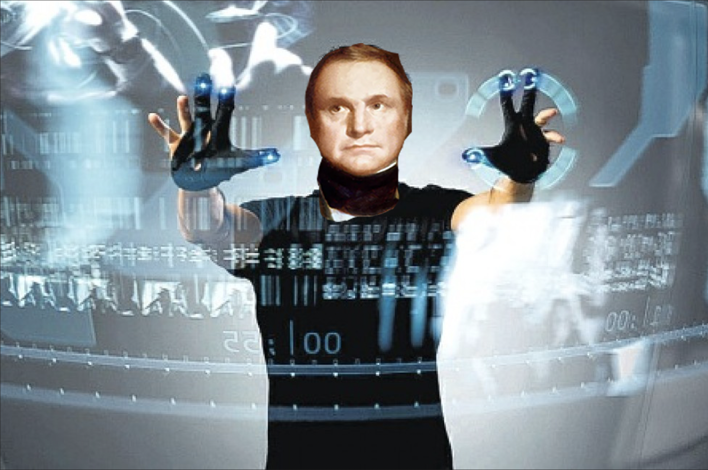

HYPERCASTING
Forecasting describes a method of simulation which projects and details likely, future scenarios.
Depending on the desirability of each scenario, it’s definition represents an effort to either avoid or
move towards it. Forecasting has the potential to influence behaviour and choices in the present and
becomes in turn shaped by these altered conditions. Though speculation is always present, plausibility is
the currency of forecasting. As such, it must be grounded on the highest resolution of analysis and
observation. Climate models are an example of forecasting.
Cells and cellular processes are competent problem-solving agents
with agendas, and the capacity to detect and store information. Cells use their cognitive abilities to
arrive at new solutions
“Man thought he was building the world for man but actually built
the world for machines”
“To what degree of knowing actually enables the construction of
itself”
A platform is a type of system that provides the grounds or basis
for future action
A platform is a type of system that provides the grounds or basis
for future action
reconstructed image - not in the register of the visual - BLACK
HOLE PIC - speculative yet totally real
SEMIOTIC MIMESIS
Models of cognition describe the way different entities understand and relate to the world around them.
These models use abstraction to assign intention to different beings and predict their behaviour. Models
of cognition are based in observation and analysis and centre the individual. An example of the deployment
of such models is the creation of ‘agents’ for computational models of behaviour.
simulating the world around you in order to interact and move
through it - how do you relate to the world
Modelling to get into minds of other beings
Grounded in analysis, situated to a subject
creating agents
A process that interprets information within contexts that
connect it with meaning
Where there is life, there is cognition
Unicellular organisms have cognition – they move towards food
they move away from toxins
Cognition understood as biological behavior
All life forms have their specific umwelten
Lifeforms perform actions that have meaning to them in their
contexts
Cognitive Assemblages are collectivities of human, non-human an
computational media through which information, interpretations and meanings circulate
Cognition is modular, each level builds on its capacities to
enable the larger goals of the next level up to emerge. Single cells know local information about
environments but network of cells integrate signals across distances, store memories of patterns, and
compute large-scale outcomes.
Cells and cellular processes are competent problem-solving agents
with agendas, and the capacity to detect and store information. Cells use their cognitive abilities to
arrive at new solutions
simulating to understand something
images are recursively participating in all sorts of material
transformations
COMPLEXCORE
Models of complexity describe wide and diverse networks of forces and actors that exceed the perception of
individuals. These models rely primarily on quantitative analysis and deploy abstraction, reduction and
simplification to make complex systems legible to individuals. Examples of Models of Complexity include
climate models, as well as population analysis (as described by Bernard Geoghegan for eugenics and kinship
cybernetic theories).
Cognitive Assemblages are collectivities of human, non-human an
computational media through which information, interpretations and meanings circulate
Cognition is modular, each level builds on its capacities to
enable the larger goals of the next level up to emerge. Single cells know local information about
environments but network of cells integrate signals across distances, store memories of patterns, and
compute large-scale outcomes.
“Man thought he was building the world for man but actually built
the world for machines”
A platform is a type of system that provides the grounds or basis
for future action
images are recursively participating in all sorts of material
transformations
“How is it possible that all these things came together to become
these single-purpose machines? How the infrastructure around the world have enabled these
machines?"
There are many ways media can manifest, and it ultimately picks a
medium
the computer simulates a city which have implications in how
computational processes fundamentally work
Translation from the external world to the internal logics of
the machine
When the machine does not have an internal vocabulary of its
own, it pulls from the external world into its internal world
addressability - series of mechanism to stabilize virtual to
physical to find its subjects

Photo-recognition and machine vision can be seen as models of 'what matters' to different AIs

PHANTOMATICS
Phantomatics is a term coined by Stanislaw Lem in his Summa Technologiae to indicate a speculative
method connecting an individual's sensorium to artificially induced sensations. The term is useful to
describe simulations that centre the viewpoint and perception of the individual human or non-human being.
Example of Phantomatics are VR technology and its sensorial counterparts, or NASA's simulations of
off-planet experiences
reconstructed image - not in the register of the visual - BLACK
HOLE PIC - speculative yet totally real
Inserting the car into everyday life through the cinematic
matrix
simulating video games/scifi to play out possible scenarios
doesn’t take place on ground truth, without a means to an
end
Centres the perception and experience of the individual human or
non-human being
Grounded in speculation
SIMUTATION
Simutations are models which have been translated from one field of knowledge or medium to the other. In
an act of forced abstraction, simutations generate productive forms of estrangement from the object of the
model. Simutations across media can also reveal the affordances and limitations of different means of
organising information. An example of simutation is the way – as described by Ranjodh Singh Dhaliwal –
computers are modelled after cities.
images are recursively participating in all sorts of material
transformations
reconstructed image - not in the register of the visual - BLACK
HOLE PIC - speculative yet totally real
the computer simulates a city which have implications in how
computational processes fundamentally work
Translation from the external world to the internal logics of
the
machine
When the machine does not have an internal vocabulary of its
own,
it pulls from the external world into its internal world
addressability - series of mechanism to stabilize virtual to
physical to find its subjects
Film, photographs, transcription protocols, tapes that
documented
Bali tribes was a form of novel ethnographic writing intended to be “pure, unmediated, objective” to
allow
the possibility for indigenous cultures to account for themselves instead of romantic depictions in
literature.
“simulating” from one format into different mediums > Spreadsheet >
Book > AR > Website > Book
duplication is key to replication